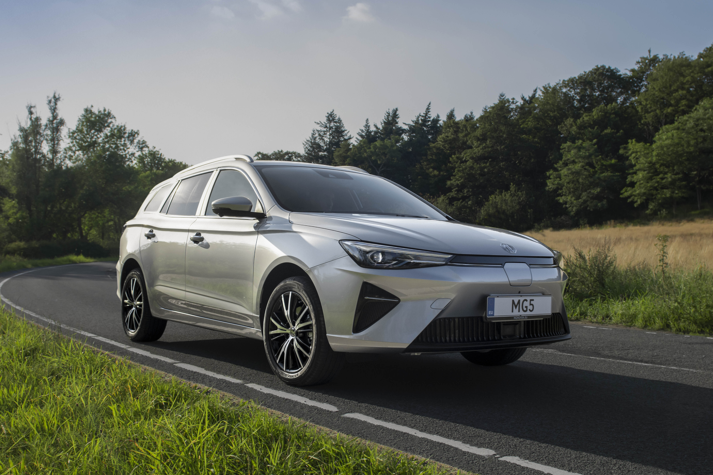
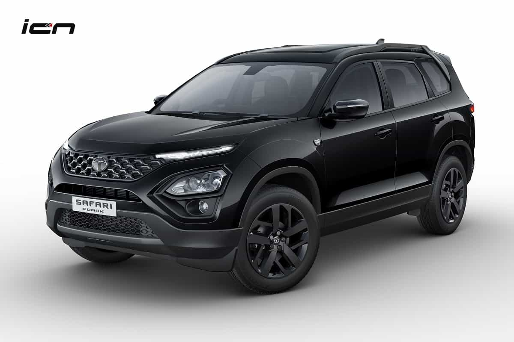
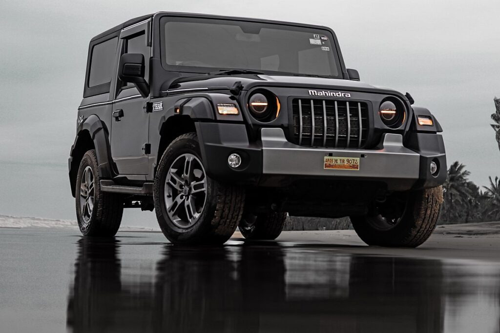
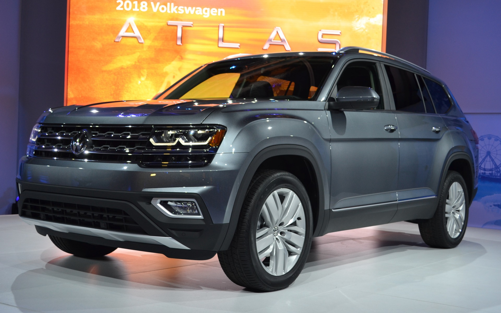

chapter1
he MG5 is a series of compact cars that has been produced by SAIC Motor under the MG marque since 2012. The first generation MG 5 was launched on 28 March 2012 in China, and shares the same automotive platform as the Roewe 350 saloon car.[1] In China, the first generation hatchback was sold as the MG5, while the sedan was sold as the MG GT. The first-generation MG GT was also sold as the MG 5 in several markets. The second-generation model is marketed as the MG5 in China and Thailand, and either the MG5 GT or MG GT elsewhere. For most markets outside China and Thailand, the MG5 nameplate is used for a different model, which is the export version of the Roewe i5. Its battery electric version, the Roewe Ei5 is exported to Europe as the MG5 EV.
chapter2
The first-generation Safari was presented in 1998 in India. The Tata range in the nineties saw the expansion into new markets with newer models such as the Indica city car and the Safari. Exports to Europe took place during the same year, with sales in the UK in 1999.[1] The Safari is powered by the same engine used in the Tata Telcoline, a 2.0-litre Peugeot XD88 turbodiesel unit with 87 PS (64 kW) power. It came with a synchromesh forward five-speed manual gearbox, with a 4WD option and 235/75x15 tyres. Compared to the Indian model, the European Safari presented some changes in particular accessories to meet the needs of European customers, the bumpers were different in colour compared to the rest of the bodywork. The name Safari was adopted to emphasize the supposed off-road qualities of the vehicle. In reality, the car was also designed for road use. The Safari is 4.65 meters long from one bumper to the other but the presence of the outer spare wheel increases the size up to 4.81 meters. The weighs of the vehicle is 1,920 kg (4,230 lb) kerb for the 2WD version, adding an extra 110 kg (240 lb) for the 4WD variant.[2] In 2017, Tata announced that the Safari Dicor was phased out with the Safari Storme being the only model remaining on sale,[3] until that, too, was discontinued in 2019.
chapter3
Named after the Thar Desert, the Mahindra Thar was first introduced in 2010 as a modernized version of the Mahindra Legend, which was based on the Mahindra MM540, a vehicle that was in production in India since the 1980s. The Thar was designed to be a rugged, reliable, and affordable off-road vehicle that could handle the rough terrain found in many parts of India. Its design is based on the iconic Jeep CJ series, which Mahindra had been producing under license since the 1940s. The first generation Mahindra Thar was powered by a 2.5-liter turbocharged diesel engine that produced 105 horsepower and 247 Nm of torque. The vehicle was available in two trim levels: the DI 2WD and the DI 4WD. The DI 2WD was a basic version that came with a soft top and no air conditioning, while the DI 4WD came with air conditioning and a hardtop. In 2015, Mahindra introduced an updated version of the Thar called the Thar CRDe. The CRDe stood for "common rail diesel engine," which was a more advanced engine that produced 105 horsepower and 247 Nm of torque. The Thar CRDe also had updated safety features, such as airbags and ABS, and was available in two trim levels: the CRDe 4WD and the CRDe 4WD AC. In 2020, Mahindra introduced the second generation Thar, which was a completely redesigned version of the vehicle. The Thar 2020 has a new, more modern design that features a bold grille, LED headlights, and a hardtop roof. It is powered by either a 2.0-liter turbocharged gasoline engine or a 2.2-liter turbocharged diesel engine, both of which are mated to either a six-speed manual or a six-speed automatic transmission. The Thar 2020 also has updated suspension and drivetrain components, as well as a range of new features, such as a touchscreen infotainment system, a rearview camera, and an adventure statistics display. The Thar 2020 is available in two trim levels: the AX and the LX, with the latter being the more premium option. The Mahindra Thar has been well-received by both off-road enthusiasts and the general public in India. It has become a popular vehicle for adventure enthusiasts, as it is capable of handling some of the most challenging terrains in India.
chapter4
The Volkswagen Atlas is a mid-size crossover SUV[10][11][12] manufactured by the German automaker Volkswagen since 2017. Developed mainly for the North American and Chinese market, the vehicle is based on the Volkswagen Group MQB platform. Outside the US and Canadian markets, the vehicle is marketed as the Volkswagen Teramont. It is positioned above the long-wheelbase Tiguan and below the smaller but upscale Touareg.